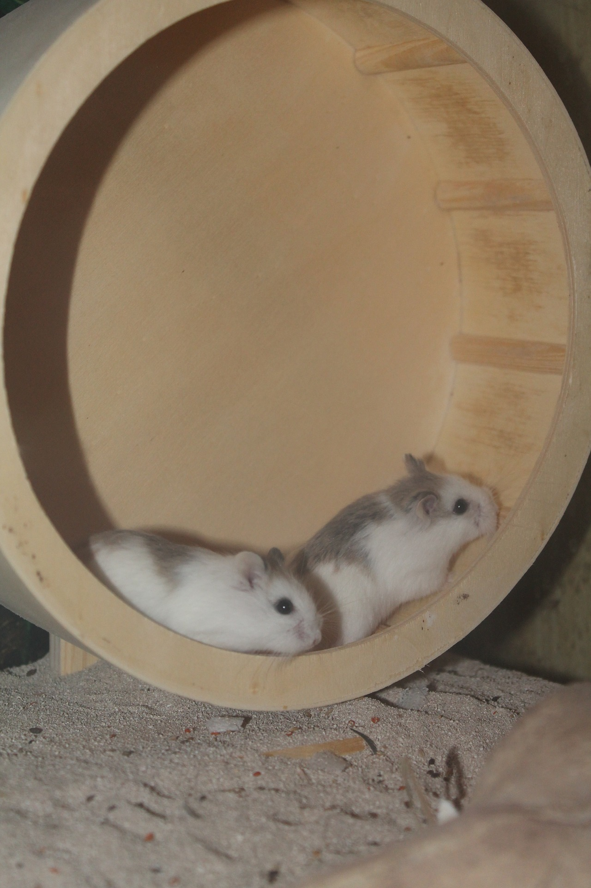

Hamsters
중가리아
로보로브스키
골든
로보로브스키햄스터(Phodopus roborovskii)
는 비단털쥐과에 속하는 설치류의 일종이다. 생후 평균 2cm 이하이며 다 자란 후 몸길이 4.5~5cm에 몸무게 20-25g에 불과하여 난쟁이햄스터속에 속하는 세 종 중에서
가장 작다
.처음에 몽골사막에서 로보로브스키라는 사람이 최초로 발견하여 로보로브스키라는 이름이 생겼다. 사막햄스터 또는 로보스(Robos)로도 불린다.
